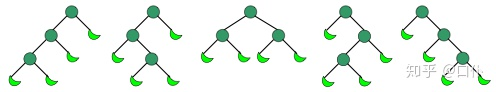

栈与卡特兰数
[TOC]
栈与卡特兰数
引入
众所周知，栈是一种较为重要的数据结构，它具有先入后出的FILO性质（即First In Last Out）。正是由于这种特殊的性质，当我们给定一个入栈顺序的时候，他的出栈顺序是什么样的呢，又应该有多少种呢，是否所有n个元素的任意排列都能符合出栈顺序呢？下面我们对这个问题进行简单的研究。
首先是判断出栈顺序合理性问题，这里用的是入栈出栈模拟方法：
设有一顺序栈S，n个不同的元素a1,a2,a3,…,an依次进栈，给出一个算法，判断上述元素的一个排列是否是合法的出栈序列，如果是，给出其出栈过程中所需的栈容量最小值。例如：
- 输入入栈序列abc，出栈序列cba，输出：3
- 输入入栈序列abc，出栈序列cab，输出：不合法
- 输入入栈序列a,b,c,d,e,f，出栈序列b,d,c,f,e,a，输出：3
对于出栈序列的目标值，先将其设为第一个出栈元素，必须让元素依次入栈直到栈顶为目标值才可以出栈，然后继续匹配下一目标值，即出栈的下一元素。若所有元素均入栈但未能成功匹配则不合法，否则匹配成功，合法，输出最大栈顶值加一。
|
其次是排列出所有可能的出栈种类。
设有一顺序栈S，n个不同的元素a1,a2,a3,…,an依次进栈，给出一个算法，求出所有合法的出栈顺序以及个数。
分析题目，每个状态对于都有下一个数入栈和栈顶出栈两种操作，因此可以使用深度优先搜索（DFS），通过递归来求解，下面是C语言实现。
|
以上代码运行结果如下：
|
观察其规律从第一项开始，构成数列1，2，5，14，42，132，429…… 显然，这并不是全排列数，而且数目必然比全排列要少许多，直接分析数字之间的规律并不能找到明显的通项或者递推公式。因此还要把问题从模拟上升到本质问题解决上。
问题分析
我们设出栈顺序数目构成的数列通项为 f(n) 。对于该问题，n = 1，2，3都很容易列举出来，故我们从n = 4开始分析。假设入栈顺序为a、b、c、d，最先入栈的1出栈可能存在四个位置：1、2、3、4，假设a出栈位于第一个位置则a入栈后立即出栈，后面b、c、d构成的出栈顺序种类数为 f(3) ，而a之前的出栈种类数应为 f(0)（定义f(0)= 1），由于a前后出栈是独立的，故使用乘法原理可以得到对应出栈种类数为 f(3) * f(0)。同理a在2、3、4位置同样可以得到对应出栈种类数为f(2) * f(1)、f(1) * f(2)、f(0) * f(3)，于是 f(4) = f(0) * f(3) + f(1) * f(2) + f(2) * f(1) + f(3) * f(0)，那么对于n个入栈元素，对应的出栈种类数可以同理得到：
$$
f(n) = \sum_{i=0}^{n-1}f(i)f(n-i-1)\tag{1}
$$
这就是对应 f(n)的一个递推公式了，而这个递推公式得出得数列被称之为卡特兰数，我们用 $Cn$ 表示。根据数学上的等价证明我们可以得到卡特兰数的通项和一些递推公式如下（时间原因这里就不证明了。其实是实力问题）：
$$
递推公式：C_n = \frac{4n-2}{n+1}C_{n-1}\tag{2}
$$
$$
通项公式：C_n = \frac{1}{n+1}C^n_{2n} = C^n_{2n} - C^{n-1}_{2n}\tag{3}
$$
通过递推or递归的代码实现如下：
|
上面代码运行的结果与用栈模拟得到的结果一致。
相关问题
除了出栈顺序能构成卡特兰数数列，也有其他问题有着同样的结果
「括号匹配」
对于 n 对括号，其共有多少种合法的匹配方式？
对于这个问题，我们有着两种解决方法，分别对应卡特兰数的两种公式。
我们任取一对括号，其他的括号组成的匹配方式分别为A，B，于是n对括号的匹配方式就是A(B)，其中AB的和种类数为n-1，A的括号数可以从0取到n-1，于是和种类数就是这种匹配方式的0到n-1的求和，也正是公式(1)>对应的卡特兰数计算式。
括号的合法匹配方式为：一个左括号对应一个右括号，且左括号必须要在右括号前面出现。为了方便说明，这里将左括号记作 +1，右括号记作 -1，则一个合法序列和一个非法序列可以表示为如下形式：
()(()) -> +1 -1 +1 +1 -1 -1
())()( -> +1 -1 -1 +1 -1 +1我们可以证明，对于合法序列来说，其「所有前缀和」必然大于等于 0，而对于非法序列来说，其必然存在前缀和小于 0 的情况。下面我们将尝试去推导序列长度为 2n 时非法序列的数量，然后用总排列数减去非法序列数即可得到合法序列数。
对于一个非法序列，我们找到其「第一个」和小于 0 的前缀，并对其中每一位进行取反。以上面的非法序列为例，我们会得到：
-1 +1 +1 +1 -1 +1，此时该序列中共有3+1个 +1 和3-1个 -1。直观上来看，第一个小于 0 的前缀和必为 -1，即 -1 比 +1 多一个，取反后则 -1 比 + 1 少一个，这样总数上看 +1 必变为n+1个，-1 则变为n-1个（因为原来二者相等）。我们可以将该结论推广为（严格的证明省略）：对于
n对括号的每种非法匹配序列 A，都会有一个含有n+1个 +1 和n-1个 -1 的序列 B 与其一一对应。非法序列的数量我们可以通过排列数$C^{n+1}{2n}$来计算（等价于$C^{n-1}{2n}$），即非法序列的数量为$C^{n-1}{2n}$ 。而序列的总数量为$C^{n}{2n}$ （从 2n 个位置中选择 n 个位置放左括号，无先后顺序)，因此合法的匹配序列数量为：
$$
C_n = C^{n}{2n} - C^{n-1}{2n} = \frac{C^{n}_{2n}}{n+1}
$$
即对应的卡特兰数公式(3)。
「单调路线」
在一个
n*n的方格中从左下角走到右上角，不穿过对角线的单调路线有多少种？
此问题同样可以通过前缀和来发现种类数仍然是个卡特兰数，因为向上走的数量不能多余向右走的数量，否则就会穿过对角线。
「满二叉树」
对于有
n+1个叶子节点，其能构成多少种形状不同的满二叉树？
需要注意的是这里的满二叉树和国内定义不同，取的是国际定义：a binary tree T is full if each node is either a leaf or possesses exactly two childnodes. 意为：如果一棵二叉树的结点要么是叶子结点，要么它有两个子结点，这样的树就是满二叉树。
我们可以证明，满二叉树的分支数目为总个数减一（除了根节点每个结点都有一个指向父节点的分支），而去掉叶子结点，每个结点的度都为2，故分支数又等于总结点数减去叶子结点树后乘二，于是包含 n+1 个叶子节点的总节点个数为 2n+1，则除开根节点需要进行 2n 次扩展来形成满二叉树，如下图所示（月牙形表示叶子节点）。扩展即从父节点向左或向右添加子节点的过程，左树的结点有2k个，则右数为2(n - k)个同样用乘法原理，然后遍历整个k即可同样得到卡特兰数的递推公式。

此外，上图还可以看做 n 个节点组成不同二叉树的方案数，其中圆形表示节点，月牙形表示什么都没有，也就是n个结点任意二叉树我们可以将其补充为满二叉树（国际定义），此时节点数为2n+1。我们可以基于卡特兰数的递推关系得出该方案数即为 $C_n$。
「多边形分形」
将
n边的凸多边形以不相交的对角线分成n-2个三角形，共有多少种方法？
这个问题我们需要从递归的角度来考虑。因为凸 边形的任意一条边必定属于某一个三角形，所以我们以某一条边为基准，将这条边的两个顶点分别记作
和
，将该凸多边形的顶点依序标记为
，再在该凸多边形中选择任意一个不属于这两个顶点的顶点
（
），来构成一个三角形，用这个三角形把该凸多边形划分为两个凸多边形，其中一个凸多边形为由
构成的凸
边形，另一个则是由
构成的凸
边形。根据乘法原理，问题的解
等价于凸
边形的划分方案数乘以凸
边形的划分方案数，遍历所有的
，可以得到：
这也就是递推形式的卡特兰数，可以看到，对于一个凸 边形来说，其分割方法数即等价于 $C_n$。下图给出了一个正六边形的分割方案，共有 $C_4 = 14$ 种。
「买票问题」
假设一张门票 5 元，售票房没有额外的零钱。现在有
m个人持有 5 元的纸币，n个人持有 10 元的纸币排队买票，问有多少种排队方式，可以让每个人都买到电影票。
找零问题的本质其实就是要让持有 5 元纸币的人和持有 10 元纸币的人保持匹配，且 5 元纸币的人需要在前面，如果将持有 5 元纸币的人编号为+1，持有 10 元纸币的人编号为-1，于是应该要求前缀和保持为大于0。不难理解这就是一个卡特兰数的问题。
然而，与标准卡特兰数相比，这里的求解还有两个不同之处：首先是持有 5 元纸币的人数 m 和持有 10 元纸币的人数 n 不一定相等（注意 m必须大于等于 n ），这样我们不能直接套用卡特兰数的通项公式，而应该从原理出发重新推导，基于「总序列数减去非法序列数」的思想，合法序列数为 。此外，我们还需要考虑排队的先后顺序，因此总的排队方式数为：